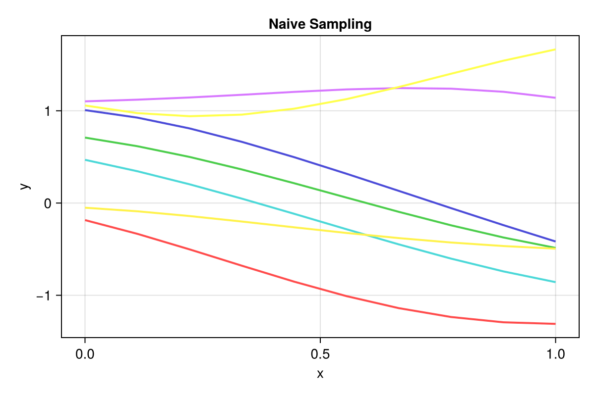
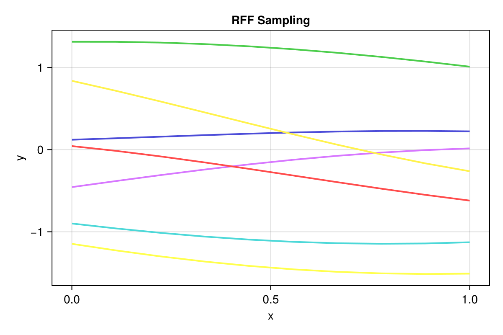

Sampling a GP Prior

You are seeing the HTML output generated by Documenter.jl and Literate.jl from the Julia source file. The corresponding notebook can be viewed in nbviewer.
Load required packages
using KernelSpectralDensities
using AbstractGPs
using StatsBase
using LinearAlgebra
using CairoMakieIntro
We use the AbstractGPs package to define a stationary GP prior, in other words, a GP that has not been conditioned on data yet.
ker = SqExponentialKernel()
S = SpectralDensity(ker, 1)
gp = GP(ker)AbstractGPs.GP{AbstractGPs.ZeroMean{Float64}, KernelFunctions.SqExponentialKernel{Distances.Euclidean}}(AbstractGPs.ZeroMean{Float64}(), Squared Exponential Kernel (metric = Distances.Euclidean(0.0)))Naive Sampling
If we want to draw a sample from the GP prior, the standard way is to use the Cholesky decomposition of the kernel matrix.
In this example, we want to sample the GP at the following points
x_sample = range(0, 2; length=5)0.0:0.5:2.0To sample, we calculate the mean and covariance of the GP at these points. While we use the AbstractGPs interface, in this case the mean is just a zero vector and the covariance is the kernel matrix over the sample points.
m = mean(gp, x_sample)Zeros(5)K = cov(gp, x_sample)5×5 Matrix{Float64}:
1.0 0.882497 0.606531 0.324652 0.135335
0.882497 1.0 0.882497 0.606531 0.324652
0.606531 0.882497 1.0 0.882497 0.606531
0.324652 0.606531 0.882497 1.0 0.882497
0.135335 0.324652 0.606531 0.882497 1.0We then compute the Cholesky decomposition of the covariance matrix samples a vector of standard normal random variables and obtain a sample from the GP prior.
function naive_sample(gp, x_sample)
m = mean(gp, x_sample)
K = cov(gp, x_sample)
Kc = cholesky(K).L
ζ = randn(length(x_sample))
return m .+ Kc * ζ
end
ys = naive_sample(gp, x_sample)5-element Vector{Float64}:
-0.497880456538927
-0.5662818332870188
-0.8454795005912243
-1.1149744375484971
-0.8091910946072824To illustrate we plot a few samples
x_plot = range(0, 1; length=10)
n_samples = 7
ys_plot = [naive_sample(gp, x_plot) for _ in 1:n_samples]
f = Figure(; size=(600, 400))
ax = Axis(f[1, 1]; xlabel="x", ylabel="y", title="Naive Sampling")
series!(ax, x_plot, reduce(hcat, ys_plot)'; labels=["sample $i" for i in 1:n_samples])
f
To evaluate the samples, we define the following function
function evaluate_samples(y_sample, m, K)
ms = mean(y_sample)
merr = norm(m .- ms)
cs = cov(y_sample)
cerr = norm(K .- cs)
print("Mean error: $merr, Covariance error: $cerr\n")
return ms, cs
endFor the small number of samples we have, the results are not very good.
y_sample = [naive_sample(gp, x_sample) for _ in 1:n_samples]
ms, cs = evaluate_samples(y_sample, m, K);Mean error: 0.9863109755153893, Covariance error: 2.8096375521957353
ms5-element Vector{Float64}:
0.10981562476406978
0.44031083678823524
0.6171010984970332
0.5265149839818042
0.32991581026533917cs5×5 Matrix{Float64}:
1.31714 0.941102 0.307375 -0.305176 -0.751424
0.941102 0.777541 0.388235 -0.0304563 -0.39374
0.307375 0.388235 0.501834 0.608555 0.535152
-0.305176 -0.0304563 0.608555 1.31275 1.59242
-0.751424 -0.39374 0.535152 1.59242 2.15999If we sample a lot more functions however, we get closer to the anaytical result
n_manysamples = 1000
y_sample = [naive_sample(gp, x_sample) for _ in 1:n_manysamples]
ms, cs = evaluate_samples(y_sample, m, K);Mean error: 0.09112083662239238, Covariance error: 0.08574644006897204
ms5-element Vector{Float64}:
-0.052207044811031666
-0.05962241637332068
-0.0415980364180494
-0.01214127943625551
0.01203293415935746cs5×5 Matrix{Float64}:
1.00385 0.873163 0.610198 0.340433 0.144414
0.873163 0.97661 0.875248 0.621779 0.347945
0.610198 0.875248 1.00342 0.904101 0.636395
0.340433 0.621779 0.904101 1.02244 0.892318
0.144414 0.347945 0.636395 0.892318 0.970916However, there are two issues with this approach:
- It is quite computationally expensive, since we need to calculate the Cholesky decomposition.
- Sampling at a larger number of points can cause conditionint issues, as we show below.
x_sample_many = range(0, 2; length=20)
try
naive_sample(gp, x_sample_many)
catch err
showerror(stderr, err)
endPosDefException: matrix is not positive definite; Factorization failed.RFF Sampling
Random Fourier features are an alternative option to sample the GP prior. Instead of computing the Cholesky decomposition of the kernel matrix, we compute a number of Fourier features and can generate samples from the GP by defining a weighted sum of these features.
\[ f(x) = \sum_{i=1}^l w_i \varphi_i(x)\]
The weights $w_i$ are sampled from a standard normal distribution.
rff = DoubleRFF(S, 10)
agps = ApproximateGPSample(rff)
agps.(x_sample)5-element Vector{Float64}:
1.2810295438770924
1.1162140294256733
0.7770627207927714
0.34160330399027394
-0.07134896426884496We can plot the samples as before
n_samples = 7
ys_plot = [ApproximateGPSample(rff).(x_plot) for _ in 1:n_samples]
f = Figure(; size=(600, 400))
ax = Axis(f[1, 1]; xlabel="x", ylabel="y", title="RFF Sampling")
series!(ax, x_plot, reduce(hcat, ys_plot)'; labels=["sample $i" for i in 1:n_samples])
f
Unfortunately, the mean and the covariance are worse than with the naive sampling for the same number of samples.
y_sample = [ApproximateGPSample(rff).(x_sample) for _ in 1:n_samples]
ms, cs = evaluate_samples(y_sample, m, K);Mean error: 0.4703725051165074, Covariance error: 1.7487573694832248
ms5-element Vector{Float64}:
-0.2916599272198823
-0.2788164310088815
-0.20907095337003995
-0.11527850400740348
-0.038031318592695cs5×5 Matrix{Float64}:
0.728927 0.606082 0.467075 0.381741 0.395026
0.606082 0.562672 0.477294 0.397215 0.365684
0.467075 0.477294 0.445296 0.395448 0.358293
0.381741 0.397215 0.395448 0.389309 0.39238
0.395026 0.365684 0.358293 0.39238 0.468779However, we now have another parameter to tune: The number of features By increasing the number of features, we get close to the result we saw with the naive sampling.
rff500 = DoubleRFF(S, 500)
y_sample = [ApproximateGPSample(rff500).(x_sample) for _ in 1:n_samples]
ms, cs = evaluate_samples(y_sample, m, K);Mean error: 1.535041408116047, Covariance error: 2.118621506946047
ms5-element Vector{Float64}:
0.9863249796239554
0.9531885294759388
0.629955041273104
0.2548571509962441
0.11467896510205029cs5×5 Matrix{Float64}:
0.986024 1.06929 0.789453 0.389075 0.0986448
1.06929 1.59471 1.51785 1.12985 0.812884
0.789453 1.51785 1.65726 1.42097 1.15974
0.389075 1.12985 1.42097 1.38114 1.25007
0.0986448 0.812884 1.15974 1.25007 1.34014By increasing the number of GP samples, we can again improve the results in both cases.
With 10 feature functions
y_sample = [ApproximateGPSample(rff).(x_sample) for _ in 1:n_manysamples]
ms, cs = evaluate_samples(y_sample, m, K);Mean error: 0.13897612660738592, Covariance error: 1.215132941499786
ms5-element Vector{Float64}:
0.058474311019376266
0.06276453528159073
0.06537066457917035
0.06444674734720866
0.05940559567355604cs5×5 Matrix{Float64}:
1.0424 1.00334 0.876581 0.712909 0.575138
1.00334 1.0641 1.01373 0.874083 0.701494
0.876581 1.01373 1.05605 0.989184 0.841873
0.712909 0.874083 0.989184 1.01591 0.946257
0.575138 0.701494 0.841873 0.946257 0.976566With 500 feature functions
y_sample = [ApproximateGPSample(rff500).(x_sample) for _ in 1:n_manysamples]
ms, cs = evaluate_samples(y_sample, m, K);Mean error: 0.05521427949286809, Covariance error: 0.1275305259448162
ms5-element Vector{Float64}:
0.0365486212262885
0.03869196883232553
0.012671806682106273
-0.006790936547433723
0.003009151121538044cs5×5 Matrix{Float64}:
0.999612 0.874209 0.573214 0.28624 0.118205
0.874209 1.02554 0.892758 0.579912 0.292827
0.573214 0.892758 1.02792 0.880059 0.566414
0.28624 0.579912 0.880059 1.00106 0.853468
0.118205 0.292827 0.566414 0.853468 0.980865Lastly, we note that we no longer have to worry about conditioning issues, and can evaluate a given GP sample at however many points we like
ApproximateGPSample(rff).(x_sample_many)20-element Vector{Float64}:
-1.6138981711044387
-1.6110727561309952
-1.5941675481835103
-1.5626196248640434
-1.5161398429978141
-1.4547193827504028
-1.3786307593985894
-1.2884232818760128
-1.184913047146441
-1.0691676676267423
-0.9424860331470348
-0.8063735072324709
-0.6625130478735763
-0.5127328236304161
-0.3589709652927843
-0.20323815002041867
-0.04757875779138393
0.10596863175635762
0.2554106209548927
0.39883747548733645Package and system information
Package information (click to expand)
Status `~/work/KernelSpectralDensities.jl/KernelSpectralDensities.jl/examples/3-priorGP/Project.toml` [99985d1d] AbstractGPs v0.5.21 [7834405d] AbstractGPsMakie v0.2.8 ⌃ [13f3f980] CairoMakie v0.12.18 [0b91fe84] DisplayAs v0.1.6 [027d52a2] KernelSpectralDensities v0.2.0 `/home/runner/work/KernelSpectralDensities.jl/KernelSpectralDensities.jl#main` [98b081ad] Literate v2.20.1 [2913bbd2] StatsBase v0.34.4 Info Packages marked with ⌃ have new versions available and may be upgradable.To reproduce this notebook's package environment, you can download the full Manifest.toml.
System information (click to expand)
Julia Version 1.11.3 Commit d63adeda50d (2025-01-21 19:42 UTC) Build Info: Official https://julialang.org/ release Platform Info: OS: Linux (x86_64-linux-gnu) CPU: 4 × AMD EPYC 7763 64-Core Processor WORD_SIZE: 64 LLVM: libLLVM-16.0.6 (ORCJIT, znver3) Threads: 1 default, 0 interactive, 1 GC (on 4 virtual cores) Environment: JULIA_PKG_SERVER_REGISTRY_PREFERENCE = eager JULIA_LOAD_PATH = :/home/runner/.julia/packages/JuliaGPsDocs/7M86H/src
This page was generated using Literate.jl.